W13. Floating-Point Instructions, High-Level Program Translation, Single-Cycle Processor Implementation
1. Summary
1.1 Floating-Point Instructions in RISC-V
RISC-V extends its instruction set architecture with dedicated support for floating-point operations. This is essential for scientific computing, graphics, signal processing, and any application requiring real numbers with decimal precision. Unlike integers, floating-point numbers can represent very large or very small values using the IEEE 754 standard.
1.1.1 Floating-Point Registers
RISC-V provides 32 dedicated floating-point registers, separate from the integer registers. These are named f0 through f31. Each floating-point register can hold either a single-precision (32-bit) or double-precision (64-bit) floating-point number.
The floating-point registers have ABI (Application Binary Interface) names that indicate their conventional usage:
| Register | ABI Name | Purpose |
|---|---|---|
| f0-f7 | ft0-ft7 | Temporary registers (caller-saved) |
| f8-f9 | fs0-fs1 | Saved registers (callee-saved) |
| f10-f11 | fa0-fa1 | Function arguments / return values |
| f12-f17 | fa2-fa7 | Function arguments |
| f18-f27 | fs2-fs11 | Saved registers (callee-saved) |
| f28-f31 | ft8-ft11 | Temporary registers (caller-saved) |
Key point: Register f10 (also known as fa0) is used for passing the first floating-point argument to functions and for returning floating-point results.
1.1.2 RISC-V Architecture Layout with Floating-Point Unit
The RISC-V processor architecture includes a separate floating-point unit alongside the integer unit:
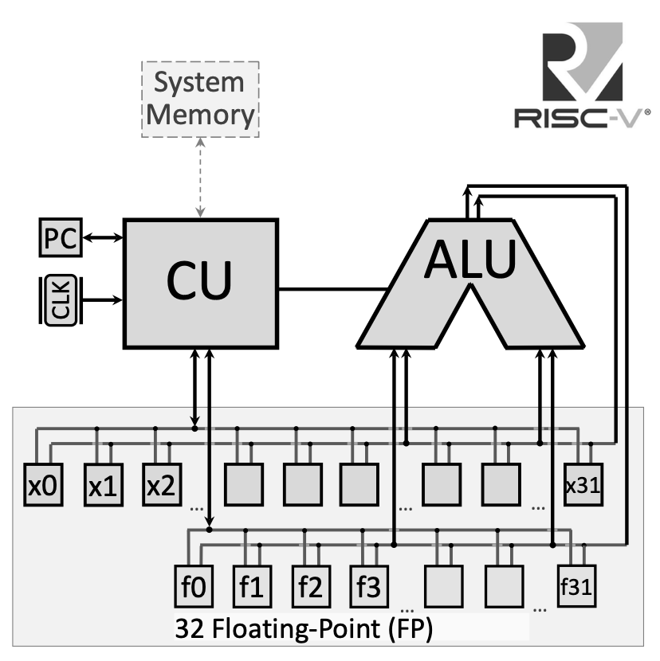
The floating-point registers connect to a dedicated bus for handling floating-point operations, separate from the integer register file. This allows the processor to execute floating-point and integer operations in parallel in more advanced implementations.
1.1.3 Floating-Point Arithmetic Instructions
RISC-V provides arithmetic operations for both single-precision (.s suffix) and double-precision (.d suffix) floating-point numbers:
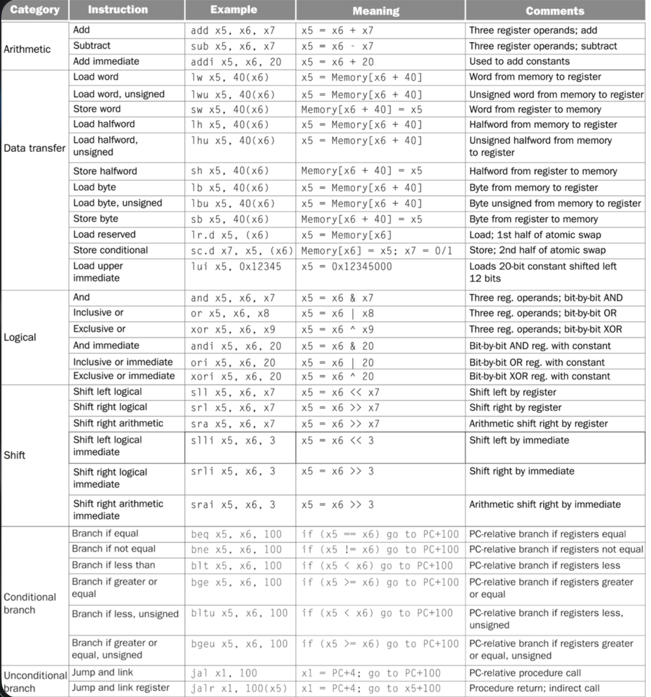
Single-Precision Operations:
fadd.s fd, fs1, fs2: Floating-point addition — \(fd = fs1 + fs2\)fsub.s fd, fs1, fs2: Floating-point subtraction — \(fd = fs1 - fs2\)fmul.s fd, fs1, fs2: Floating-point multiplication — \(fd = fs1 \times fs2\)fdiv.s fd, fs1, fs2: Floating-point division — \(fd = fs1 / fs2\)fsqrt.s fd, fs1: Square root — \(fd = \sqrt{fs1}\)
Double-Precision Operations:
fadd.d fd, fs1, fs2: Double-precision addition — \(fd = fs1 + fs2\)fsub.d fd, fs1, fs2: Double-precision subtraction — \(fd = fs1 - fs2\)fmul.d fd, fs1, fs2: Double-precision multiplication — \(fd = fs1 \times fs2\)fdiv.d fd, fs1, fs2: Double-precision division — \(fd = fs1 / fs2\)fsqrt.d fd, fs1: Double-precision square root — \(fd = \sqrt{fs1}\)
1.1.4 Floating-Point Comparison Instructions
Comparison instructions write their result to an integer register (not a floating-point register), setting it to 1 if the condition is true, or 0 if false:
Single-Precision Comparisons:
feq.s rd, fs1, fs2: Set if equal — \(rd = 1\) if \(fs1 == fs2\), else \(rd = 0\)flt.s rd, fs1, fs2: Set if less than — \(rd = 1\) if \(fs1 < fs2\), else \(rd = 0\)fle.s rd, fs1, fs2: Set if less or equal — \(rd = 1\) if \(fs1 \le fs2\), else \(rd = 0\)
Double-Precision Comparisons:
feq.d rd, fs1, fs2: Double-precision equality checkflt.d rd, fs1, fs2: Double-precision less thanfle.d rd, fs1, fs2: Double-precision less or equal
1.1.5 Floating-Point Data Transfer Instructions
To move data between memory and floating-point registers:
flw fd, offset(rs): Load single-precision float from memory — \(fd = \text{Memory}[rs + offset]\)fld fd, offset(rs): Load double-precision float from memory — \(fd = \text{Memory}[rs + offset]\)fsw fs, offset(rs): Store single-precision float to memory — \(\text{Memory}[rs + offset] = fs\)fsd fs, offset(rs): Store double-precision float to memory — \(\text{Memory}[rs + offset] = fs\)
1.1.6 Floating-Point Move Instructions
To copy values between floating-point registers:
fmv.s fd, fs: Copy single-precision value fromfstofdfmv.d fd, fs: Copy double-precision value fromfstofd
1.1.7 System Calls for Floating-Point I/O
RISC-V system calls provide input/output for floating-point values:
| Code (a7) | Service | Arguments/Returns |
|---|---|---|
| 2 | Print float | fa0 contains float value to print |
| 3 | Print double | fa0 contains double value to print |
| 6 | Read float | Reads float, stores in fa0 |
| 7 | Read double | Reads double, stores in fa0 |
Important: Note that floating-point I/O uses register fa0 (which is f10), not the integer register a0.
1.2 High-Level Program Translation into Machine Code
Understanding how high-level code becomes executable machine code is fundamental to computer architecture. This process involves multiple transformation stages, each serving a specific purpose.
1.2.1 The Translation Pipeline
The complete translation from a high-level program (like C/C++) to executable machine code involves four main stages:
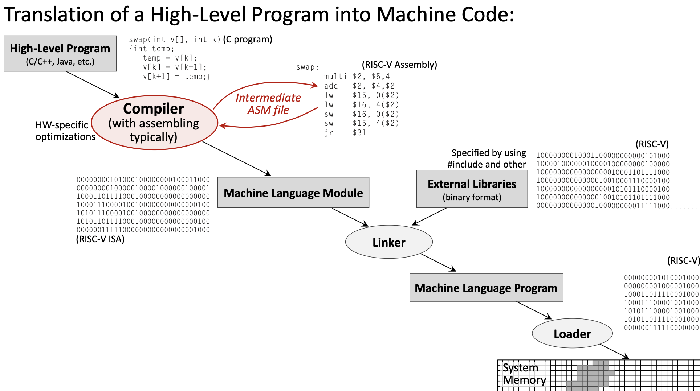
- High-Level Program (e.g., C code) →
- Compiler → Assembly Language Program →
- Assembler → Machine Language Module (Object file) →
- Linker → Executable Program →
- Loader → Program in Memory
1.2.2 The Compiler
The compiler transforms high-level source code into assembly language. This is where most optimization happens.
Key responsibilities:
- Translate high-level constructs (loops, conditionals, functions) into assembly
- Apply hardware-specific optimizations
- Manage register allocation
- Generate efficient code based on optimization level settings (e.g.,
-O0,-O2,-O3)
Example transformation:
// High-Level C Code
float f2c(float fahr) {
return ((5.0f/9.0f) * (fahr - 32.0f));
}Becomes assembly:
f2c:
flw f0, const5, t0 # f0 = 5.0f
flw f1, const9, t0 # f1 = 9.0f
fdiv.s f0, f0, f1 # f0 = 5.0f/9.0f
flw f1, const32, t0 # f1 = 32.0f
fsub.s f10, f10, f1 # f10 = fahr - 32.0f
fmul.s f10, f0, f10 # f10 = (5.0f/9.0f) * (fahr - 32.0f)
ret1.2.3 The Assembler
The assembler translates assembly language into machine language (binary object files).
Key responsibilities:
- Convert mnemonics to binary opcodes
- Resolve local labels to addresses
- Generate relocation information for the linker
- Create symbol tables
The assembler produces object files (.o files) containing:
- Machine code (binary instructions)
- Data sections
- Symbol table (for linking)
- Relocation information
1.2.4 The Linker
The linker combines multiple object files and external libraries into a single executable.
Key responsibilities:
- Resolve external references (functions/variables defined in other files)
- Combine code and data sections from multiple object files
- Link with external libraries (standard library, math library, etc.)
- Assign final memory addresses
1.2.5 The Loader
The loader is part of the operating system that loads the executable into memory for execution.
Key responsibilities:
- Allocate memory for the program
- Load code and data segments
- Set up the stack and heap
- Initialize the Program Counter to the program’s entry point
1.2.6 Hardware Dependency
The translation stages differ in their hardware dependency:
- Hardware-Independent: High-level source code (portable across platforms)
- Hardware-Dependent: Assembly, object code, and executables (specific to RISC-V, x86, ARM, etc.)
This separation is why the same C program can be compiled for different processor architectures.
1.3 RISC-V Instruction Encoding
Every RISC-V instruction is encoded as exactly 32 bits. Different instruction types use different bit field layouts to encode their operands.
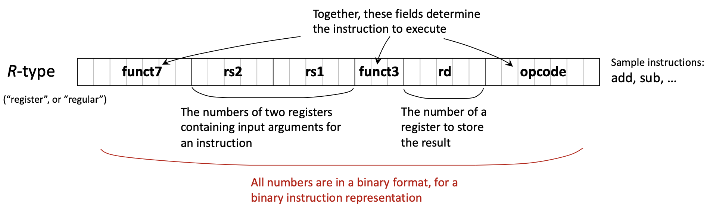
1.3.1 Main Instruction Formats
RISC-V uses six primary instruction formats:
R-type (Register): For operations using only registers
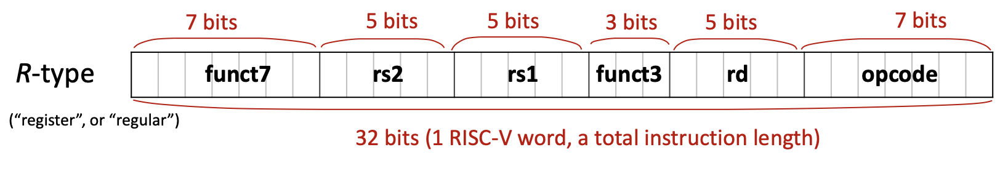
| funct7 (7) | rs2 (5) | rs1 (5) | funct3 (3) | rd (5) | opcode (7) |
|---|
- Used for:
add,sub,and,or,sll,srl, etc. - All operands are registers
I-type (Immediate): For operations with immediate values and loads
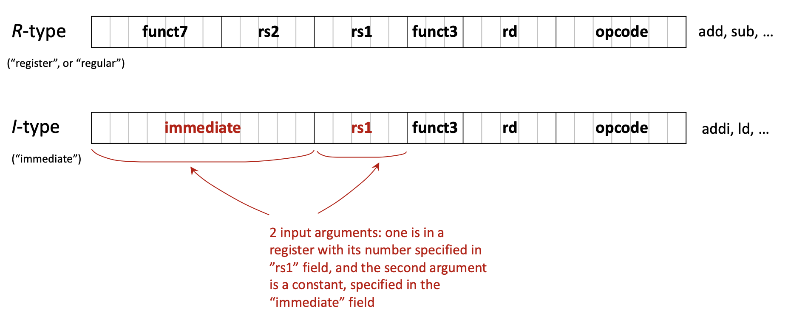
| imm[11:0] (12) | rs1 (5) | funct3 (3) | rd (5) | opcode (7) |
|---|
- Used for:
addi,andi,ori,ld,lw,jalr, etc. - 12-bit signed immediate value
S-type (Store): For store instructions
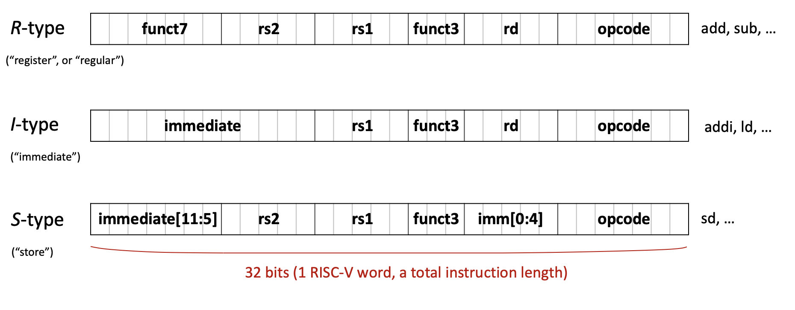
| imm[11:5] (7) | rs2 (5) | rs1 (5) | funct3 (3) | imm[4:0] (5) | opcode (7) |
|---|
- Used for:
sw,sd,sb, etc. - Immediate is split across two fields
B-type (Branch): For conditional branches
| imm[12|10:5] (7) | rs2 (5) | rs1 (5) | funct3 (3) | imm[4:1|11] (5) | opcode (7) |
|---|
- Used for:
beq,bne,blt,bge, etc. - Immediate encodes branch offset (shifted)
U-type (Upper immediate): For large immediates
| imm[31:12] (20) | rd (5) | opcode (7) |
|---|
- Used for:
lui,auipc - 20-bit immediate placed in upper bits
J-type (Jump): For unconditional jumps
| imm[20|10:1|11|19:12] (20) | rd (5) | opcode (7) |
|---|
- Used for:
jal - 20-bit immediate for jump offset
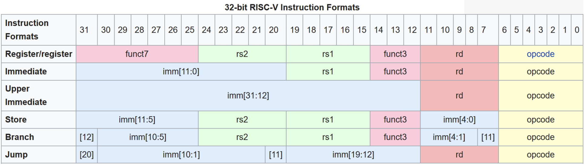
1.3.2 Example: Translating C to Binary
Let’s trace the translation of A[30] = h + A[30] + 1 where h is in register x21 and the base address of array A is in x18.
Step 1: Assign registers
h→x21- Base address of
A→x18 - Temporary →
x5
Step 2: Write assembly
ld x5, 240(x18) # Load A[30] (offset = 30 × 8 = 240 bytes for doubleword)
add x5, x21, x5 # x5 = h + A[30]
addi x5, x5, 1 # x5 = h + A[30] + 1
sd x5, 240(x18) # Store result back to A[30]Step 3: Identify instruction types
ld→ I-typeadd→ R-typeaddi→ I-typesd→ S-type
Step 4: Encode to binary (example for ld x5, 240(x18))
- Opcode for
ld: 0000011 (3 in decimal) - rd: 00101 (5 in decimal)
- funct3 for doubleword: 011
- rs1: 10010 (18 in decimal)
- immediate: 000011110000 (240 in binary)
Final binary: 000011110000 10010 011 00101 0000011
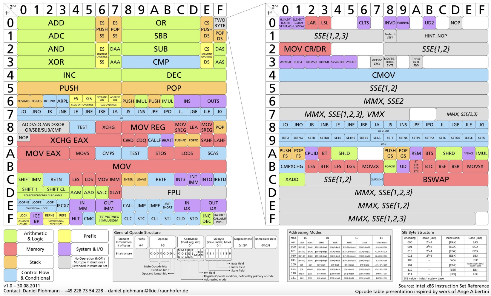
1.4 Single-Cycle Processor Implementation
A single-cycle processor executes each instruction in exactly one clock cycle. While simple to understand, this design has limitations that motivate more advanced implementations like pipelining.
1.4.1 Recap: RISC-V Architecture
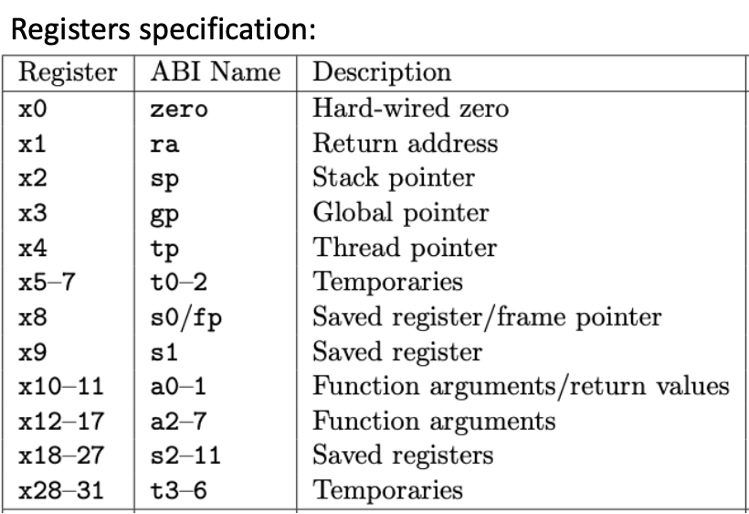
Key characteristics:
- Architecture type: RISC (Reduced Instruction Set Computer)
- Memory type: Load-Store (only load/store instructions access memory)
- Standard: Open Architecture
- Address space: 32 or 64 bits
- Instruction size: Fixed 32 bits
- Registers: 32 general-purpose (x0-x31) + 32 floating-point (f0-f31)
- Special register: PC (Program Counter)
1.4.2 The Program Counter (PC)
The Program Counter is a special-purpose register that holds the address of the next instruction to be executed. Understanding the PC is crucial for understanding how programs flow.
Key facts about PC:
- Contains a memory address pointing to the next instruction
- Automatically incremented by 4 after each instruction (since all RISC-V instructions are 4 bytes)
- Modified by branch and jump instructions to change program flow
1.4.3 Harvard vs. Von Neumann Architecture
Two fundamental memory architectures exist:
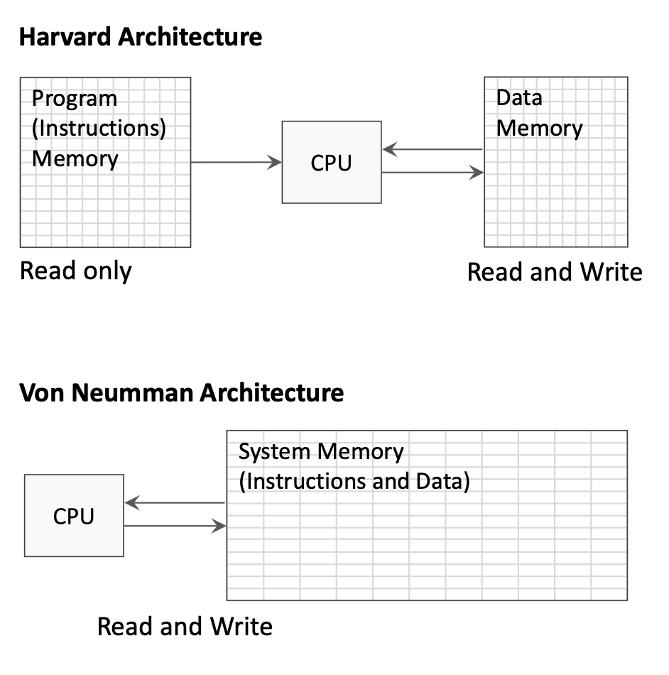
Harvard Architecture:
- Separate memory spaces for instructions and data
- Instruction memory is read-only during execution
- Data memory allows both read and write
- Allows simultaneous instruction fetch and data access
Von Neumann Architecture:
- Single unified memory for both instructions and data
- Simpler design but can create memory access bottleneck
- Instructions and data share the same bus
The single-cycle processor diagrams typically show separate instruction and data memories (Harvard style) for clarity.
1.4.4 Instruction Execution Stages
Every instruction goes through a sequence of stages. In a single-cycle processor, all stages complete in one clock cycle:
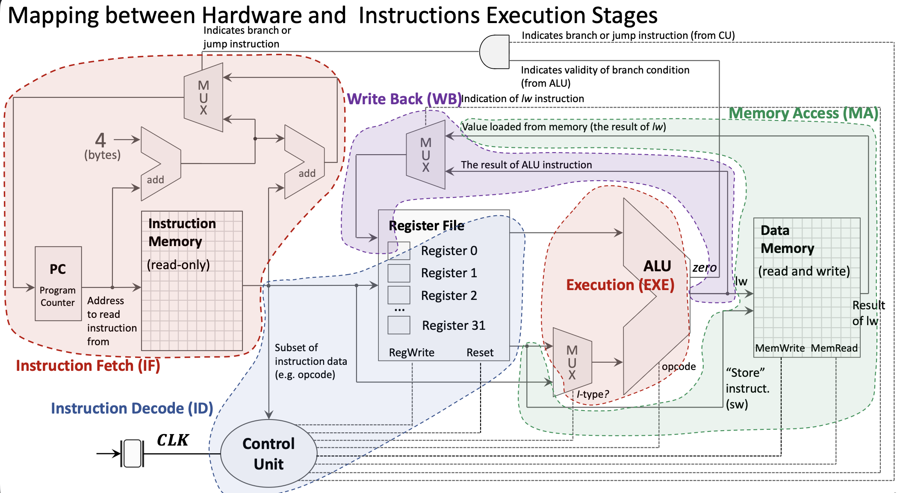
1. Instruction Fetch (IF):
- PC sends address to Instruction Memory
- Instruction Memory returns the 32-bit instruction
- PC is incremented by 4 in parallel
2. Instruction Decode (ID):
- Instruction bits are distributed to appropriate components
- Register file reads source registers (rs1, rs2)
- Control Unit decodes opcode and generates control signals
- Immediate value is extracted and sign-extended
3. Execution (EXE):
- ALU performs the operation specified by the instruction
- For R-type: operates on two register values
- For I-type: operates on register value and immediate
- MUX selects between register and immediate for second ALU input
4. Memory Access (MA):
- Only used by load/store instructions
lw/ld: Read data from Data Memorysw/sd: Write data to Data Memory- Other instructions bypass this stage
5. Write Back (WB):
- Result written back to destination register in Register File
- Source can be ALU result or value loaded from memory
- MUX selects the appropriate source
1.4.5 Control Unit
The Control Unit (CU) decodes the opcode and generates control signals that configure the datapath:
- ALU control: What operation the ALU should perform
- ALUSrc: Select register value or immediate for ALU input
- MemRead/MemWrite: Enable reading/writing Data Memory
- RegWrite: Enable writing to Register File
- MemtoReg: Select ALU result or memory value for write-back
- Branch: Indicates a branch instruction
1.4.6 Branch Instruction Implementation
Branch instructions require special handling:
Branch address calculation:
- Immediate value is extracted and shifted (branch offsets are multiples of 2)
- Branch target = PC + (immediate × 2)
Branch condition evaluation:
- ALU computes rs1 - rs2
- “Zero” output indicates if rs1 equals rs2
- AND gate combines “Branch” control signal with condition result
PC update:
- MUX selects between PC+4 (sequential) and branch target
- Selection controlled by branch condition result
1.4.7 Memory Access Instructions
Load and store instructions access the Data Memory:
Store Word (sw):
- ALU calculates address: rs1 + offset
- Value from rs2 goes to Data Memory write port
- MemWrite signal enables the write
Load Word (lw):
- ALU calculates address: rs1 + offset
- MemRead signal enables reading from Data Memory
- MUX selects memory value (instead of ALU result) for write-back
- Value written to destination register
1.4.8 Complete Single-Cycle Datapath
The complete datapath includes:
- PC: Holds address of current instruction
- Instruction Memory: Stores program instructions
- Register File: 32 integer registers with 2 read ports and 1 write port
- ALU: Performs arithmetic and logical operations
- Data Memory: Stores program data
- Control Unit: Generates control signals
- Multiplexers: Select between alternative data paths
- Adders: Compute PC+4 and branch targets
1.4.9 Clocking and Synchronization
All state elements (PC, Register File, Memories) are synchronized by the clock signal:
- Rising edge: State elements capture new values
- Clock period: Must be long enough for slowest instruction to complete
- Reset signal: Initializes PC to starting address
The single-cycle design’s limitation: clock period is determined by the slowest instruction (typically load), making faster instructions wait unnecessarily.
1.5 Introduction to Pipelining
Pipelining is a fundamental technique that improves processor throughput by overlapping instruction execution.
1.5.1 The Pipelining Concept
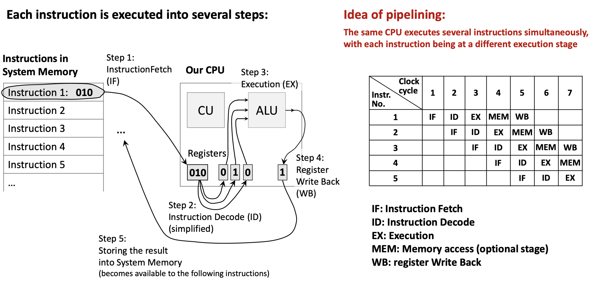
Analogy: Think of an assembly line in a factory. While one car is being painted, another is being assembled, and a third is having its engine installed. No car finishes faster, but more cars are completed per unit time.
In a processor:
- Each instruction still takes multiple stages (IF, ID, EXE, MEM, WB)
- But different instructions occupy different stages simultaneously
- When Instruction 1 is in ID stage, Instruction 2 can be in IF stage
- Ideally, throughput increases by factor of pipeline depth
Benefits:
- Higher instruction throughput (more instructions per second)
- Better utilization of hardware components
Challenges:
- Data hazards: Instruction needs data from previous instruction not yet available
- Control hazards: Branch instructions disrupt the pipeline flow
- Structural hazards: Hardware resource conflicts
Pipelining doesn’t reduce latency (time for one instruction) but dramatically increases throughput (instructions per second).
2. Definitions
- Floating-Point Number: A number representation that can express very large or very small values using a sign, mantissa (significand), and exponent, following the IEEE 754 standard.
- Single-Precision: A 32-bit floating-point format providing approximately 7 decimal digits of precision.
- Double-Precision: A 64-bit floating-point format providing approximately 15-16 decimal digits of precision.
- Floating-Point Register: One of 32 dedicated registers (f0-f31) in RISC-V used exclusively for floating-point operations.
- Compiler: A program that translates high-level source code (like C) into assembly language, applying optimizations for the target hardware.
- Assembler: A program that translates assembly language mnemonics into binary machine code (object files).
- Linker: A program that combines multiple object files and libraries into a single executable program, resolving external references.
- Loader: An operating system component that loads an executable program into memory and prepares it for execution.
- Object File: The binary output of an assembler containing machine code, data, symbol tables, and relocation information.
- Opcode: The portion of a machine instruction that specifies the operation to be performed.
- Instruction Format: The layout of bit fields within a machine instruction (e.g., R-type, I-type, S-type).
- R-type Instruction: A RISC-V instruction format where all operands are registers, used for arithmetic and logical operations.
- I-type Instruction: A RISC-V instruction format with a 12-bit immediate value, used for immediate operations and loads.
- S-type Instruction: A RISC-V instruction format used for store operations, with the immediate value split across two fields.
- Program Counter (PC): A special register containing the memory address of the next instruction to be executed.
- Single-Cycle Processor: A processor design where each instruction completes in exactly one clock cycle.
- Datapath: The collection of hardware components (registers, ALU, memory, etc.) through which data flows during instruction execution.
- Control Unit (CU): The processor component that decodes instructions and generates control signals to coordinate the datapath.
- ALU (Arithmetic Logic Unit): The processor component that performs arithmetic and logical operations.
- Instruction Fetch (IF): The stage where the processor reads an instruction from memory using the PC address.
- Instruction Decode (ID): The stage where the instruction is interpreted and operands are read from registers.
- Execution (EXE): The stage where the ALU performs the operation specified by the instruction.
- Memory Access (MA): The stage where load/store instructions read from or write to data memory.
- Write Back (WB): The stage where the result is written to the destination register.
- Harvard Architecture: A computer architecture with separate memory spaces for instructions and data.
- Von Neumann Architecture: A computer architecture with a single unified memory for both instructions and data.
- Multiplexer (MUX): A circuit that selects one of several input signals based on a control signal and forwards it to the output.
- Pipelining: A technique where multiple instructions are overlapped in execution, with each instruction in a different stage simultaneously.
- Throughput: The number of instructions completed per unit time.
- Latency: The time required to complete a single instruction from start to finish.
3. Examples
3.1. Fahrenheit to Celsius Conversion (Lab 11, Task 1)
Write a RISC-V program using floating-point instructions to convert temperature from Fahrenheit to Celsius using the formula: \[°C = (°F - 32.0) \times \frac{5.0}{9.0}\]
Click to see the solution
Key Concept: Use floating-point arithmetic instructions to perform the conversion. Constants must be stored in memory and loaded into floating-point registers.
The function:
.data:
const5: .float 5.0 # Allocate float constant 5.0
const9: .float 9.0 # Allocate float constant 9.0
const32: .float 32.0 # Allocate float constant 32.0
.text
f2c: # Function to convert Fahrenheit to Celsius
flw f0, const5, t0 # f0 = 5.0f (t0 used as temp for address)
flw f1, const9, t0 # f1 = 9.0f
fdiv.s f0, f0, f1 # f0 = 5.0f / 9.0f
flw f1, const32, t0 # f1 = 32.0f
fsub.s f10, f10, f1 # f10 = fahr - 32.0f (input in f10)
fmul.s f10, f0, f10 # f10 = (5.0f/9.0f) * (fahr - 32.0f)
ret # Return (result in f10)Complete program with main:
.data:
const5: .float 5.0
const9: .float 9.0
const32: .float 32.0
.text
main:
li a7, 6 # System call code to read a float
ecall # Execute system call (input stored in fa0)
fmv.s f10, fa0 # Move input to f10 (Note: f10 IS fa0, so this is redundant!)
call f2c # Call conversion function
li a7, 2 # System call code to print a float
ecall # Print result (fa0 = f10 already contains result)
li a7, 10 # System call code to exit
ecall # Exit program
f2c:
flw f0, const5, t0
flw f1, const9, t0
fdiv.s f0, f0, f1
flw f1, const32, t0
fsub.s f10, f10, f1
fmul.s f10, f0, f10
retDiscussion Question: Why is fmv.s f10, fa0 redundant?
Answer: Because f10 and fa0 are the same register! The ABI name fa0 is just an alias for register f10. So copying from fa0 to f10 does nothing.
Step-by-step explanation:
- Read input: System call 6 reads a float from user into
fa0(which isf10) - Call function:
f2cexpects argument inf10, which already contains the input - Inside f2c:
- Load constants 5.0, 9.0, and 32.0 from memory
- Compute
5.0 / 9.0and store inf0 - Subtract 32.0 from input temperature
- Multiply by
5.0/9.0to get Celsius
- Print result: System call 2 prints the float in
fa0(which is the result inf10)
Answer: For input 212°F, the program outputs 100.0 (the boiling point of water in Celsius).
3.2. Sphere Surface Area and Volume (Lab 11, Task 2)
Write a RISC-V program to compute the surface area and volume of a sphere using the formulas: \[\text{surfaceArea} = 4.0 \times \pi \times r^2\] \[\text{volume} = \frac{4.0}{3.0} \times \pi \times r^3\]
Hint: Assume \(\pi = 3.14159\)
Click to see the solution
Key Concept: Use floating-point multiplication to compute powers (\(r^2 = r \times r\), \(r^3 = r \times r \times r\)) and combine with constants.
.data
pi: .float 3.14159
four: .float 4.0
three: .float 3.0
sa_msg: .asciiz "Surface Area: "
vol_msg: .asciiz "\nVolume: "
prompt: .asciiz "Enter radius: "
.text
main:
# Print prompt
li a7, 4
la a0, prompt
ecall
# Read radius from user
li a7, 6
ecall
fmv.s f10, fa0 # f10 = radius
# Load constants
flw f0, pi, t0 # f0 = pi
flw f1, four, t0 # f1 = 4.0
flw f2, three, t0 # f2 = 3.0
# Calculate r^2
fmul.s f3, f10, f10 # f3 = r * r = r^2
# Calculate r^3
fmul.s f4, f3, f10 # f4 = r^2 * r = r^3
# Calculate surface area: 4.0 * pi * r^2
fmul.s f5, f1, f0 # f5 = 4.0 * pi
fmul.s f5, f5, f3 # f5 = 4.0 * pi * r^2 (surface area)
# Calculate volume: (4.0/3.0) * pi * r^3
fdiv.s f6, f1, f2 # f6 = 4.0 / 3.0
fmul.s f6, f6, f0 # f6 = (4.0/3.0) * pi
fmul.s f6, f6, f4 # f6 = (4.0/3.0) * pi * r^3 (volume)
# Print surface area
li a7, 4
la a0, sa_msg
ecall
li a7, 2
fmv.s fa0, f5 # Move surface area to fa0 for printing
ecall
# Print volume
li a7, 4
la a0, vol_msg
ecall
li a7, 2
fmv.s fa0, f6 # Move volume to fa0 for printing
ecall
# Exit
li a7, 10
ecallStep-by-step:
- Read radius into
f10 - Load constants: \(\pi\), 4.0, and 3.0
- Compute \(r^2\): Multiply radius by itself
- Compute \(r^3\): Multiply \(r^2\) by radius
- Surface area: \(4.0 \times \pi \times r^2\)
- Volume: \((4.0 / 3.0) \times \pi \times r^3\)
- Print results using system calls
Answer: For radius = 5.0:
- Surface Area ≈ 314.159
- Volume ≈ 523.599
3.3. Calculate Function f(x) (Lab 11, Task 3)
Write a program to calculate the following expression: \[f(x) = \frac{e^2}{\pi} \cdot x\]
Hint: Assume \(\pi = 3.14159\) and \(e = 2.71828\)
Click to see the solution
Key Concept: Pre-compute \(e^2\) as a constant or compute it at runtime, then divide by \(\pi\) and multiply by \(x\).
.data
pi: .float 3.14159
e: .float 2.71828
prompt: .asciiz "Enter x: "
result: .asciiz "f(x) = "
.text
main:
# Print prompt
li a7, 4
la a0, prompt
ecall
# Read x from user
li a7, 6
ecall
fmv.s f10, fa0 # f10 = x
# Load constants
flw f0, e, t0 # f0 = e
flw f1, pi, t0 # f1 = pi
# Calculate e^2
fmul.s f2, f0, f0 # f2 = e * e = e^2
# Calculate e^2 / pi
fdiv.s f3, f2, f1 # f3 = e^2 / pi
# Calculate f(x) = (e^2 / pi) * x
fmul.s f4, f3, f10 # f4 = (e^2 / pi) * x
# Print result message
li a7, 4
la a0, result
ecall
# Print result value
li a7, 2
fmv.s fa0, f4
ecall
# Exit
li a7, 10
ecallStep-by-step:
- Read input \(x\) from user
- Load constants \(e\) and \(\pi\)
- Compute \(e^2\):
fmul.s f2, f0, f0 - Compute \(e^2 / \pi\):
fdiv.s f3, f2, f1 - Compute result: Multiply by \(x\)
Answer: For \(x = 1.0\):
- \(e^2 \approx 7.389\)
- \(e^2 / \pi \approx 2.351\)
- \(f(1.0) \approx 2.351\)
3.4. Translate C Expression to RISC-V (Lecture 11, Example 1)
Translate the C expression A[30] = h + A[30] + 1 into RISC-V assembly and then into binary machine code.
Assume:
- Variable
his assigned to registerx21 - Base address of array
Ais in registerx18 - Array
Acontains 64-bit doublewords
Click to see the solution
Key Concept: Break down the expression into basic operations: load from memory, add values, store back to memory.
Step 1: Write the assembly code
ld x5, 240(x18) # Load A[30] into x5 (offset = 30 × 8 = 240)
add x5, x21, x5 # x5 = h + A[30]
addi x5, x5, 1 # x5 = h + A[30] + 1
sd x5, 240(x18) # Store result back to A[30]Step 2: Identify instruction types
| Instruction | Type | Format |
|---|---|---|
ld x5, 240(x18) |
I-type | immediate | rs1 | funct3 | rd | opcode |
add x5, x21, x5 |
R-type | funct7 | rs2 | rs1 | funct3 | rd | opcode |
addi x5, x5, 1 |
I-type | immediate | rs1 | funct3 | rd | opcode |
sd x5, 240(x18) |
S-type | imm[11:5] | rs2 | rs1 | funct3 | imm[4:0] | opcode |
Step 3: Encode ld x5, 240(x18) to binary
- Opcode for
ld: 0000011 (3) - rd = x5: 00101 (5)
- funct3 for doubleword: 011 (3)
- rs1 = x18: 10010 (18)
- immediate = 240: 000011110000
Binary: 000011110000 10010 011 00101 0000011
Step 4: Encode add x5, x21, x5 to binary
- Opcode for R-type: 0110011 (51)
- rd = x5: 00101
- funct3 for add: 000
- rs1 = x21: 10101 (21)
- rs2 = x5: 00101 (5)
- funct7 for add: 0000000
Binary: 0000000 00101 10101 000 00101 0110011
Step 5: Encode addi x5, x5, 1 to binary
- Opcode for I-type: 0010011 (19)
- rd = x5: 00101
- funct3 for addi: 000
- rs1 = x5: 00101
- immediate = 1: 000000000001
Binary: 000000000001 00101 000 00101 0010011
Step 6: Encode sd x5, 240(x18) to binary
- Opcode for S-type: 0100011 (35)
- funct3 for doubleword: 011
- rs1 = x18: 10010
- rs2 = x5: 00101
- immediate = 240 split: imm[11:5] = 0000111, imm[4:0] = 10000
Binary: 0000111 00101 10010 011 10000 0100011
Answer: The complete binary encoding:
ld x5, 240(x18): 000011110000 10010 011 00101 0000011
add x5, x21, x5: 0000000 00101 10101 000 00101 0110011
addi x5, x5, 1: 000000000001 00101 000 00101 0010011
sd x5, 240(x18): 0000111 00101 10010 011 10000 01000113.5. Identify Instruction Stages (Lecture 11, Example 2)
For each of the following instructions, identify which execution stages are used:
add x5, x6, x7lw x5, 0(x6)sw x5, 0(x6)beq x5, x6, label
Click to see the solution
Key Concept: Different instructions use different subsets of the five stages (IF, ID, EXE, MA, WB).
(a) add x5, x6, x7 (R-type arithmetic)
| Stage | Used? | Activity |
|---|---|---|
| IF | ✓ | Fetch instruction from memory |
| ID | ✓ | Read x6 and x7 from register file |
| EXE | ✓ | ALU computes x6 + x7 |
| MA | ✗ | No memory access needed |
| WB | ✓ | Write result to x5 |
(b) lw x5, 0(x6) (Load word)
| Stage | Used? | Activity |
|---|---|---|
| IF | ✓ | Fetch instruction |
| ID | ✓ | Read x6 (base address) |
| EXE | ✓ | ALU computes address: x6 + 0 |
| MA | ✓ | Read data from memory at computed address |
| WB | ✓ | Write loaded value to x5 |
(c) sw x5, 0(x6) (Store word)
| Stage | Used? | Activity |
|---|---|---|
| IF | ✓ | Fetch instruction |
| ID | ✓ | Read x5 (value) and x6 (address) |
| EXE | ✓ | ALU computes address: x6 + 0 |
| MA | ✓ | Write x5 value to memory |
| WB | ✗ | No register to write |
(d) beq x5, x6, label (Branch)
| Stage | Used? | Activity |
|---|---|---|
| IF | ✓ | Fetch instruction |
| ID | ✓ | Read x5 and x6; decode branch target |
| EXE | ✓ | ALU compares x5 and x6 (subtraction) |
| MA | ✗ | No memory access |
| WB | ✗ | No register to write |
Answer:
add: IF, ID, EXE, WBlw: IF, ID, EXE, MA, WB (uses all stages)sw: IF, ID, EXE, MAbeq: IF, ID, EXE
3.6. Trace Pipeline Execution (Lecture 11, Example 3)
Show how the following sequence of instructions would execute in a 5-stage pipeline over time:
add x1, x2, x3
sub x4, x5, x6
and x7, x8, x9
or x10, x11, x12Click to see the solution
Key Concept: In a pipeline, each instruction progresses through stages one at a time, while new instructions enter behind it.
Pipeline execution diagram:
| Clock Cycle | 1 | 2 | 3 | 4 | 5 | 6 | 7 | 8 |
|---|---|---|---|---|---|---|---|---|
add |
IF | ID | EX | MA | WB | |||
sub |
IF | ID | EX | MA | WB | |||
and |
IF | ID | EX | MA | WB | |||
or |
IF | ID | EX | MA | WB |
Explanation by clock cycle:
- Cycle 1:
addenters IF stage - Cycle 2:
addmoves to ID;subenters IF - Cycle 3:
addin EX;subin ID;andenters IF - Cycle 4:
addin MA;subin EX;andin ID;orenters IF - Cycle 5:
addcompletes (WB);subin MA;andin EX;orin ID - Cycle 6:
subcompletes;andin MA;orin EX - Cycle 7:
andcompletes;orin MA - Cycle 8:
orcompletes
Throughput analysis:
- Without pipelining: 4 instructions × 5 cycles = 20 cycles
- With pipelining: 8 cycles (4 cycles to fill + 4 instructions)
- Speedup: 20/8 = 2.5x (approaches 5x for longer sequences)
Answer: All 4 instructions complete in 8 clock cycles. Once the pipeline is full (cycle 4), one instruction completes every cycle.
3.7. Single-Cycle vs Pipelined Performance (Lecture 11, Example 4)
A single-cycle processor has the following stage delays:
- IF: 200 ps
- ID: 100 ps
- EX: 200 ps
- MA: 200 ps
- WB: 100 ps
Calculate:
- The clock period for a single-cycle implementation
- The clock period for a pipelined implementation
- The speedup for executing 100 instructions
Click to see the solution
Key Concept: Single-cycle must wait for slowest instruction; pipelined clock is limited by slowest stage.
(a) Single-cycle clock period:
The clock must be long enough for any instruction to complete all stages: \[T_{single} = IF + ID + EX + MA + WB = 200 + 100 + 200 + 200 + 100 = 800 \text{ ps}\]
(b) Pipelined clock period:
The clock is limited by the slowest stage: \[T_{pipelined} = \max(IF, ID, EX, MA, WB) = \max(200, 100, 200, 200, 100) = 200 \text{ ps}\]
(c) Speedup for 100 instructions:
Single-cycle time: \[\text{Time}_{single} = 100 \times 800 \text{ ps} = 80,000 \text{ ps}\]
Pipelined time: First instruction takes 5 cycles, then one instruction completes each cycle: \[\text{Time}_{pipelined} = (5 + 99) \times 200 \text{ ps} = 104 \times 200 = 20,800 \text{ ps}\]
Speedup: \[\text{Speedup} = \frac{80,000}{20,800} \approx 3.85\]
Answer:
- Single-cycle period: 800 ps
- Pipelined period: 200 ps
- Speedup: ~3.85x (approaches 4x = 800/200 for large instruction counts)